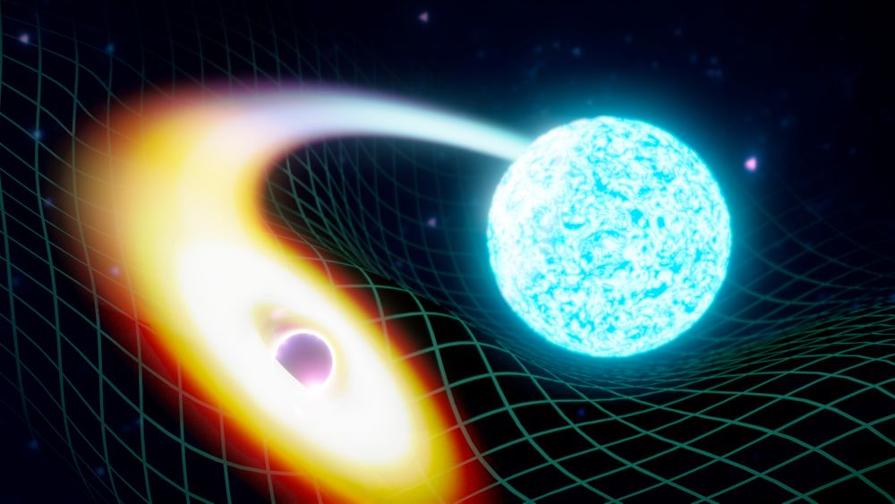
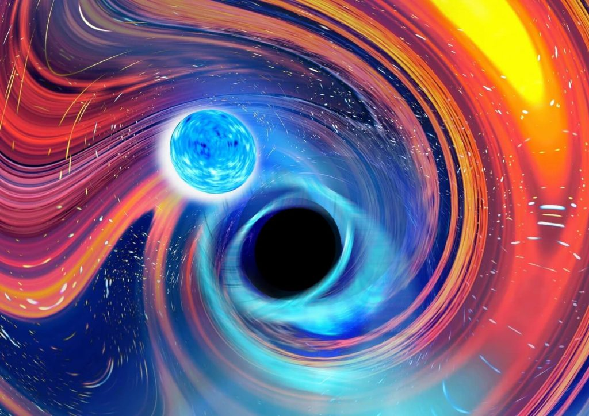

ဒီလို အာကာသ တွင်းနက်တစ်ခုကနေ နျူထရွန်ကြယ်ကို ဝါးမြိုလိုက်တဲ့ ဖြစ်ရပ်ဟာ တစ်ခုထဲ မဟုတ်ပဲ နှစ်ခုတောင်မှ ရှာဖွေတွေ့ရှိခဲ့တာပါ။ နောက်ပြီး ဒီဖြစ်စဉ်ကိုလဲ တစ်ပါတ်ပဲ ခြားပြီး ရှာဖွေတွေ့ရှိခဲ့ခြင်း ဖြစ်ပါတယ်။ တွင်းနက်ကြီးတွေကို လေ့လာနေတဲ့ သိပ္ပံပညာရှင် တွေအတွက်တော့ အတော်ကံကောင်းတဲ့ အပါတ်ပဲလို့ ပြောရမှာပေါ့ ခင်ဗျာ။ (ကံကောင်းရင် နိုဘယ်ဆုကြီးတောင် ချိတ်နိုင်သေးတာနော်)။
အခုရှာဖွေ တွေ့ရှိမှုဟာ တွင်းနက်ကြီးတစ်ခုက နျူထရွန်ကြယ် တစ်လုံးကို ဝါးမြိုလိုက်တာကို သမိုင်းမှာ ပထမဆုံး ရှာဖွေတွေ့ရှိတာပဲ ဖြစ်ပါတယ်။ ဒီ ဖြစ်စဉ်ဟာ အခု လတ်တလော ဖြစ်ပျက်တာတော့ မဟုတ်ပါဘူး။ ခန့်မှန်းခြေ လွန်ခဲ့တဲ့ နှစ်သန်း တစ်ထောင်ခန့်က အလွန်ဝေးကွာတဲ့ အာကာသ တစ်နေရာမှာ ဖြစ်ပျက်ခဲ့တာ ဖြစ်ပါတယ်။ (ဟုတ်ပါတယ် နှစ် သန်း တစ်ထောင်ပါ)။
အခု ရှာဖွေတွေ့ရှိမှုကို The Astrophysical Journal Letters မှာ ဖော်ပြခဲ့တာ ဖြစ်ပါတယ်။ ဒီသုတေသနမှာ ပညာရှင် တစ်ထောင်ကျော်တောင် ပါဝင်ပြီး ပူးပေါင်း သုတေသန ပြုလုပ်ခဲ့တာ ဖြစ်ပါတယ်။ အခုတွေ့ရှိမှုဟာ စကြာဝဠာရဲ့ လှို့ဝှက်ချက်တွေကို ဖော်ထုတ်ဖို့ အရေးပါတဲ့ ခြေလှမ်းတစ်ရပ် ဖြစ်တယ်လို့ ဆိုကြပါတယ်။
တွင်းနက်ကြီးတွေနဲ့ နျူထရွန်ကြယ်ဆိုတာ ဘာတွေလဲ
အာကာသ တွင်းနက်ကြီးတွေဟာ ကြယ်တွေ သေဆုံးပြီး ဖြစ်ပေါ်လာတဲ့ စကြာဝဠာရဲ့ ထူးခြားဖြစ်စဉ် တစ်ခု ဖြစ်ပါတယ်။ ဧရာမ ကြယ်ကြီးတွေ သက်တမ်းကုန် သွားတဲ့ အခါ ပြင်းထန်စွာ ပေါက်ကွဲသွားကြပါတယ်။ ဒီလိုပေါက်ကွဲထွက်တာကို ဆူပါနိုဗာ ပေါက်ကွဲမှုကြီးလို့ ခေါ်တာပါ။ ပေါက်ကွဲပြီး ကြွင်းကျန်ရစ်တဲ့ ဒြပ်ထုတွေဟာ ကြယ်ရဲ့ ဗဟိုအူတိုင်ရဲ့ ဆွဲငင်အားကြောင့် အတွင်းကို ပြိုကျသွားကြပါတယ်။ မြေပြိုသလိုမျိုးပေါ့။ ဒါပေမယ့် အလယ်အူတိုင်ရဲ့ ဆွဲငင်အားက အရမ်းပြင်းထန်တာမို့ ပြိုကျသွားတဲ့ ဒြပ်ပစ္စည်းတွေဟာ အလွန်တရာမှ သိပ်သည်းဆ ကြီးမားသွားတဲ့ အထိ ကျစ်သွားပါတယ်။ ဒီလို အရမ်းသိပ်သည်းလာ လေလေ ဆွဲငင်အား ပိုပြီး ပြင်းထန်လာ လေလေပါပဲ။ ဒီလိုနဲ့ နောက်ဆုံးမှာ ဆွဲငင်အား များလွန်းလို့ အနားက ဖြတ်သွားတဲ့ အလင်းရောင်တောင် လွတ်အောင် ပြေးမထွက်နိုင် တော့ပါဘူး။ ဒီနည်းနဲ့ တွင်းနက်ကြီးတွေ ဖြစ်လာရတာပါ။အကယ်လို့ သိပ်သည်းဆဟာ တွင်းနက်ကြီး ဖြစ်လာလောက်အောင် အရမ်းမများလွန်းဘူး ဆိုရင် ဒီကြယ်ဟာ အလွန်သိပ်သည်းဆ များတဲ့ ကြယ်ပုလေး ဖြစ်လို့ သွားပါတယ်။ ဒါကို နျူထရွန်ကြယ် ခေါ်တာပါ။ တနည်းအားဖြင့် လုံလောက်တဲ့ ဒြပ်ထုနဲ့ သိပ်သည်းမှု မရတဲ့ အတွက် တွင်းနက်ကြီး ဖြစ်ခွင့် မရလိုက်တဲ့ ကြယ်တွေဟာ နျူထရွန်ကြယ် ဖြစ်လာတာပါ။ Black hole ဖြစ်ဖို့ အတန်းမအောင်တဲ့ ကြယ်တွေပေါ့ဗျာ။
သူက အတန်းတာ မအောင်တာဗျ၊ သိပ်သည်းဆနဲ့ ဆွဲအားမှာတော့ မခေလှပါဘူး။ နျူထရွန်ကြယ်တွေရဲ့ အရွယ်ဟာ အချင်းမိုင် ၂၀ လောက်ထိကို သေးငယ်နိုင်ပါတယ်။ ဒါပေမယ့် သူ့ရဲ့ ဒြပ်ထု လက်ဖက်ရည်ဇွန်း တစ်ဇွန်းရဲ့ အလေးချိန်ဟာ ဧဝရက်တောင်ကြီး တစ်ခုလုံးရဲ့ အလေးချိန်လောက်တောင် လေးနိုင်ပါတယ်တဲ့။ သူ့ရဲ့ ဆွဲငင်အားကလဲ အလင်းရောင်ကို လွတ်မသွားအောင် မဆွဲနိုင်ပေမယ့် အနားက ဖြတ်သွားတဲ့ အရာဝတ္ထု အတော်များများကိုတော့ မလွတ်တမ်း ဆွဲထားနိုင်ပါတယ်။
တခါတလေ နျူထရွန်ကြယ် တွေကို ကြယ်နှစ်လုံးပူးနေတဲ့နေအဖွဲ့အစည်းတွေထဲမှာလဲ တွေ့ရတတ်ပါတယ်။ ဒီအခါမျိုးမှာ နျူထရွန်ကြယ် နှစ်လုံးဟာ တစ်ခုကို တစ်ခု ပတ်ပြီး လည်ပတ်နေတတ်ကြပါတယ်။
တွင်းနက်ကြီးက နျူထရွန်ကြယ်ကို ဝါးမြိုလိုက်တာကို ဘယ်လိုရှာတွေ့တာလဲ
လွန်ခဲ့တဲ့ နှစ် ၁၀၀ လောက်တုန်းက အိုင်းစတိုင်းက ဆွဲငင်အားလှိုင်း (Gravitational waves) တွေ ရှိတယ်ဆိုပြီး ဟောကိန်းထုတ်ခဲ့ပါတယ်။ အိုင်းစတိုင်းက ပြောတာက အကယ်၍ စကြာဝဠာထဲမှာ အလွန် ဒြပ်ထုကြီးမားတဲ့ (ကြယ်ကြီးတွေလို့) အရာဝတ္ထုတွေ တိုက်မိကြတဲ့ အခါမျိုးမှာ တုန်ခါတဲ့ ဆွဲငင်အားလှိုင်းတွေ ဖြစ်ပေါ်လာမယ်လို့ ပြောခဲ့တာပါ။ နှစ် ၁၀၀ က ပြောခဲ့တဲ့ ဟောကိန်းဖြစ်တဲ့ ဆွဲငင်အားလှိုင်းတွေကို ၂၀၁၅ ခုနှစ်ကျမှပဲ သိပ္ပံပညာရှင်တွေက ရှာဖွေတွေ့ရှိကြပါတယ်။ အဲ့သည် ၂၀၁၅ ခုနှစ်မှာ တွင်းနက်ကြီး နှစ်ခု တိုက်မိခဲ့ကြပြီး ဖြစ်လောတဲ့ ဆွဲငင်အားလှိုင်းတွေကို အမေရိကန် သိပ္ပံ ပညာရှင်များက ရှာတွေ့ခဲ့ ကြတာ ဖြစ်ပါတယ်။အဲ့သည် ၂၀၁၅ က စလို့ ပညာရှင်တွေဟာ တွင်းနက်ကြီးတွေ အချင်းချင်း တိုက်မိလို့ ဖြစ်လာတဲ့ ဆွဲငင်အား လှိုင်းတွေရော၊ နျူထရွန်ကြယ် အခြင်းခြင်း တိုက်မိကြလို့ ဖြစ်လာတဲ့ ဆွဲငင်အား လှိုင်းတွေကိုပါ တစ်ခုပြီး တစ်ခု ရှာဖွေ တွေ့ရှိခဲ့ ကြပါတယ်။ ဒါပေမယ့် ၂၀၂၀ ခုနှစ်ထိအောင် တွင်းနက်ကြီးနဲ့ နျူထရွန်ကြယ်တို့ တိုက်မိကြတဲ့ ဖြစ်စဉ်ကို ရှာဖွေလို့ မတွေ့ခဲ့ ကြပါဘူး။ ပညာရှင်တွေရဲ့ တွက်ချက်မှုတွေ အရ အခုလို တွင်းနက်ကြီးနဲ့ နျူထရွန်ကြယ်တို့ တိုက်မိတဲ့ ဖြစ်စဉ်ဟာ ဖြစ်နိုင်တယ်ဆိုတာ သိပေမယ့် သက်သေပြစရာ အထောက်အထား ရှာလို့ မတွေ့ခဲ့ ပါဘူး။
၂၀၂၀ ခုနှစ်ထဲမှာတော့ ပိုအားကောင်းတဲ့ ဆွဲအားလှိုင်းတိုင်းတာရေး ကိရိယာတွေကို တပ်ဆင်ခဲ့ပါတယ်။ အဲ့သည် တိုင်းတာရေး ကိရိယာတွေကနေ ၂၀၂၀ ဇန်နဝါရီ လထဲမှာ အခုနက တွင်းနက်ကြီးနဲ့ နျူထရွန်ကြယ် တိုက်မိတဲ့ ဖြစ်စဉ်ကို တိုင်းတာရရှိခဲ့တာပဲ ဖြစ်ပါတယ်။

ပထမ တိုက်မိမှု
ပထမ တိုက်မိတဲ့ ဖြစ်စဉ်ကို ၂၀၂၀ ဇန်နဝါရီ ၅ ရက်နေ့မှာ စတင်တွေ့ရှိခဲ့ပါတယ်။ ဒီတိုင်းတာမှုအရ ကျွန်တော်တို့ နေထက် နှစ်ဆလောက် ပိုလေးတဲ့ နျူထရွန်ကြယ်ကို နေရဲ့ ၉ ဆလောက် လေးတဲ့ တွင်းနက်ကြီးက ဝါးမြိုလိုက်တဲ့ ဖြစ်စဉ်ပဲ ဖြစ်ပါတယ်။ အခုလို တိုက်မိလို့ ဖြစ်ပေါ်လာတဲ့ ဆွဲအားလှိုင်းတွေဟာ အလင်းရဲ့ အလျှင်နှုန်းနဲ့ စကြာဝဠာအနှံ့ကို ပျံ့နှုံလို့ သွားပါတယ်။ ဒီလှိုင်းတွေ ကမ္ဘာကို ရောက်ဖို့ကတော့ နှစ်သန်း ၉၀၀ လောက် အချိန်ကြာခဲ့ပါတယ်။ဒုတိယ တိုက်မိမှု
ဒုတိယ တိုက်မိမှုကိုတော့ နောက်တစ်ပါတ်မှာ ရှာတွေ့ခဲ့တာပဲ ဖြစ်ပါတယ်။ ဒီဖြစ်စဉ်မှာတော့ နေထက် ၁ ဆခွဲလောက် ပိုကြီးတဲ့ နျူထရွန်ကြယ်ကို နေထက် ၆ ဆလောက် ပိုကြီးတဲ့ တွင်းနက်ကြီးက ဝါးမျိုခဲ့တာပဲ ဖြစ်ပါတယ်။သိပ္ပံပညာရှင်တွေက ကမ္ဘာကနေ အလင်းနှစ်သန်း ၁၀၀၀ အကွာအဝေးအတွင်းမှာ အခုလို ကြယ်နဲ့ တွင်းနက်ကြီး တိုက်မိတဲ့ ဖြစ်စဉ်မျိုး တစ်လ တစ်ခါလောက်တော့ အနည်းဆုံး ဖြစ်ကြတယ်လို့ ဆိုပါတယ်။ လက်ရှိမှာ ဆွဲငင်အားတိုင်းတာရေး သုတေသန ဌာနတွေက တိုင်းတာရေး ပစ္စည်းတွေကို အဆင့်မြှင့်တင်တာတွေ လုပ်နေတဲ့ အတွက် နောက်ဆို ဒီလိုတိုက်မိမှုမျိုးတွေကို ပိုပြီး များများ ရှာဖွေတွေ့ရှိ လာလိမ့်မယ်လို့ မျှော်လင့်နေ ကြပါတယ်။ သိပ္ပံပညာရှင်တွေကတော့ နျူထရွန်ကြယ်ကို တွင်းနက်ကြီးက ဝါးလိုက်လို့ အစိတ်စိတ် အမွှာမွှာ ဖြစ်သွားပုံကို မြင်ချင်ကြပါတယ်။ အခုအပေါ်က တိုက်မိမှု နှစ်ခုလုံးဟာ အလွန်ဝေးကွာ လွန်းတာကြောင့် ဘာအလင်းရောင်မှ ထွက်ပေါ်လာခြင်း မရှိပါဘူး။ နည်းနည်း ပိုနီးတဲ့နေရာက တိုက်မိမှုကြီး ဖြစ်လာပြီး အလင်းရောင်တွေ ထွက်ပေါ်လာတာကို မြင်ရဖို့ မျှော်လင့်နေကြပါတယ်။
အရေးပါတဲ့ နက္ကတ္တဗေဒ ပညာရပ်ဆိုင်ရာ တွေ့ရှိမှုကြီး
ဒီသုတေသနမှာ ပါဝင်ခဲ့တဲ့ ပညာရှင်တစ်ဦးဖြစ်တဲ့ ဆူစန် စကော့တ်က အခုလို ပြောပါတယ်။အခုတိုက်မိမှုတွေကြောင့် စကြာဝဠာကြီးတစ်ခုလုံးကို တုန်လှုပ်သွားစေတဲ့ ဆွဲအားလှိုင်းတွေ ထွက်ပေါ်လာခဲ့ပါတယ်။ ရေပေါ်ကို ခဲတစ်လုံးကျရင် မျက်နှာပြင်တစ်ခုလုံးကို ရေလှိုင်းတွေ ပြန့်ထွက်သွားသလိုပါပဲ။ ဒီလှိုင်းလေးတွေ ကမ္ဘာကို ရောက်လာတဲ့ အချိန်မှာ တိုင်းတာရရှိခဲံတာ ဖြစ်ပါတယ်။ ဒီတိုက်မိမှုတွေဟာ ဒြပ်ထုကြီးမားတဲ့ ပစ္စည်းနှစ်ခု မတော်တဆ တိုက်မိမှုထက်ကို ပိုပါတယ်။ တွေ့ရှိမှု နှစ်ခုလုံးမှာ တွင်းနက်ကြီးက နျူထရွန်ကြယ်ကို ဝါးမြိုလိုက်တာပဲ ဖြစ်ပါတယ်။ ဒါမျိုးတွေ့ရဖို့ ကျွန်မတို့ နှစ်ပေါင်းများစွာ စောင့်ခဲ့ရတာပါ။
Susan Scott

Source: The Smithsonian Magazine